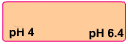

Demonstration of pH Effect on Fluorescence Excitation and Emission Spectra of a Fluorophore

×
Manual
- Prepare a 250 mL solution of 6.4 x 10-4M fluorescein in spectroscopy grade methanol. Here it is shown in a volumetric flask.
- Take 100 mL of this solution in a beaker and measure the pH of the solution by using a pH-meter. The pH of the methanol solution used here was ~4. Note that prior to pH measurement the pH-meter should be calibrated with appropriate buffer solutions.
- Add a few drops of 1 N NaOH solution to the solution in the beaker to raise the solution pH value to ~6.4.
- Run the excitation and emission spectra of both pH 4 and 6.4 solutions of fluorescein in methanol.
- To commence the measurements, click on the pop-up: Start Fluorescence Measurement.
- Click on the volumetric flask containing pH 4 fluorescein solution to take it onto the experiment table.
- Take an all-side-transparent quartz cuvette (path length, 1 cm x1 cm) by clicking on it.
- Click on the 5 mL capacity pipette to collect 3 mL of the pH 4 fluorescein solution which will be transferred into the quartz cuvette. In real operation, one has to set the volume to 3 mL in the pipette and an appropriate tip should be attached prior to dipping it in the solution.
- Click on the pipette to draw the solution into it.
- Click on the pipette to take it out of the volumetric flask.
- Click on the pipette again to transfer the solution into the cuvette.
- Start fluorescence measurement to run the Excitation and Emission Spectral Scans of the sample on the spectrofluorimeter as follows.
- Turn on the spectrofluorimeter by clicking on the power button. In real operation, it takes approx. 30 min for initialization of the instrument.
- Click on the lid of the sample chamber of the spectrofluorimeter to open it for placing the sample in the instrument.
- To place the cuvette in the sample holder of the chamber, click on the cuvette.
- Close the lid of the sample chamber by clicking on the lid.
- To run the Excitation Spectral Scan of the sample, open the instrument set-up screen by clicking on the fluorescence measurement icon on the computer monitor.
- Select the Excitation Scan Mode on the screen. On the screen, enter the Emission wavelength: 514 nm, Excitation Start Wavelength: 350 nm and Excitation End wavelength: 600 nm. One chooses the Excitation Slit(nm) and Emission Slit(nm) values (here 1.5 nm/1.5 nm) and the scan speed value (here very fast ) also.
- Click on OK button on the set-up screen to run the wavelength scan for the excitation spectrum.
- Click on Close button when spectral scan is complete. In real operation, the scan data are stored in the computer. The instrument stores data and therefore asks for the Sample File name. One enters a file name to save the data.
- To run the Emission Spectral Scan of the sample, open the instrument set-up screen by clicking on the fluorescence icon on the computer monitor.
- Select the Emission Scan Mode on the screen. On the screen, enter the Excitation wavelength: 490 nm, Emission Start Wavelength: 500 nm and Emission End wavelength: 600 nm. One chooses the Excitation Slit(nm) and Emission Slit(nm) values (here 1.5 nm/1.5 nm) and the scan speed value (here very fast ) also.
- Click on the OK button on the set-up screen to run the wavelength scan for emission spectrum. One has to be sure that the solvent blank does not fluoresce in the wavelength range of interest.
- Click on Close button when spectral scan is complete. In real operation, the scan data are stored in the computer. The instrument stores data and therefore asks for the Sample File name. One enters a file name to save the data.
- To take the cuvette out of the sample chamber, first click on the sample chamber lid to open it and then on the cuvette.
- Close the lid of the sample chamber by clicking on it.
- Click on Reset button to start over the measurements.
- Click on the beaker containing pH 6.4 fluorescein solution to take it onto the experiment table. In real measurements, if one uses the same cuvette for the measurement, one should rinse the cuvette by taking a small portion of the experimental solution to be analyzed prior to filling up the cuvette with the solution. (Why?)
- Repeat the Excitation and Emission scans for this solution.
- For the Excitation Spectral Scan of the sample: Enter the Emission wavelength: 531 nm, Excitation Start Wavelength: 350 nm and Excitation End wavelength: 600 nm. Excitation Slit(nm) and Emission Slit(nm) values are 1.5 nm/1.5 nm and the scan speed value is set to very fast .
- For the Emission Spectral Scan of pH 6.4 fluorescein solution: Enter the Excitation wavelength: 490 nm, Emission Start Wavelength: 500 nm and Emission End wavelength: 600 nm. Excitation Slit(nm) and Emission Slit(nm) values are 1.5 nm/1.5 nm and the scan speed value is set to very fast .
- Collect all data by clicking on the Data tab.
- Find out the excitation maximum, emission maximum wavelengths and intensities for two different pH solutions of fluorescein.
- Calculate the excitation and emission fluorescence maxima in wave-number/cm-1 unit and determine the Stokes shifts (in wave-number unit, cm-1) for variation in pH values.
- Discuss your results.

